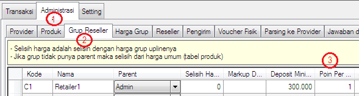
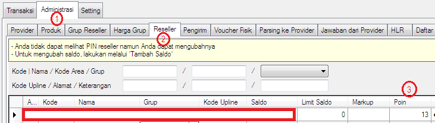
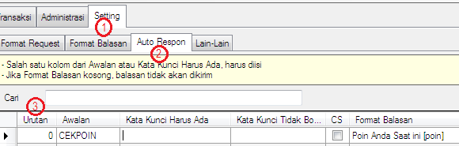
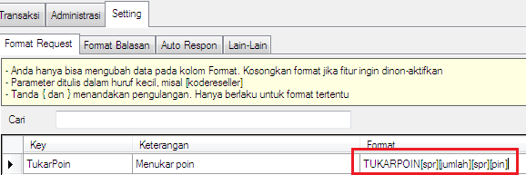
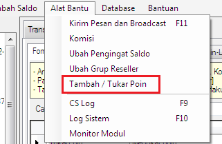
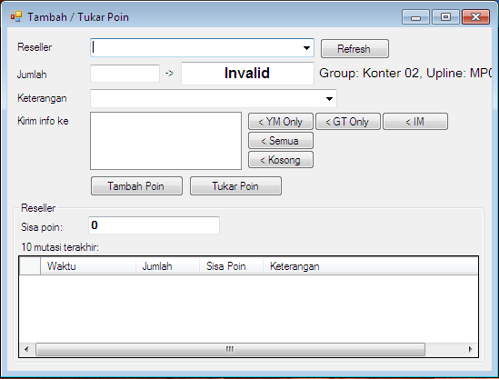

Sistem Poin
Apa sih Sistem Poin? Sistem dimana setiap transaksi sukses yang dilakukan reseller akan diberikan poin sesuai yang telah ditentukan dan sebagai acuan memberikan hadiah tertentu kepada reseller apabila mencapai jumlah poin tertentu. Misalnya: bila reseller berhasil mengumpulkan 10.000 poin akan diberikan hadiah berupa HP Oppo, 20.000 poin Laptop, dan lain sebagainya.
Fitur ini merupakan fitur baru di versi 3.6.3 dan hanya tersedia di edisi minimal Standard cek disini, sehingga bila OtomaX Anda saat ini belum memakai versi 3.6.3, update dahulu klik disini; dan bila masa berlaku habis, bayar iuran tahunan dulu klik disini; dan bila edisi OtomaX Anda masih di bawah edisi Standard, upgrade dahulu klik disini; dan bila belum memiliki software OtomaX, beli dahulu klik disini. Bagaimana penggunaan fitur Sistem Poin di OtomaX tersebut? simak yang berikut ini:
Masuk menu Administrasi -> Grup Reseller -> kolom Poin Per Trx. Tentukan Grup
Reseller yang akan diberikan poin dan tentukan poin per transaksinya. Bubuhkan poin yang diinginkan
di kolom Poin Per Trx, misalnya 1 trx 1 poin.

Dengan setting seperti di atas setiap reseller bertransaksi dengan status sukses dia akan mendapatkan 1
poin, Anda dapat mengeceknya di Administrasi -> Reseller -> kolom Poin.

Agar Reseller dapat melakukan pengecekan jumlah poin yang terkumpul, masuk menu Setting -> Auto
Respon -> lakukan seperti yang tertera di gambar di bawah ini.

Sekarang Reseller dapat cek poin dengan mengirimkan pesan: CEKPOIN
Untuk penukaran poin dapat dilakukan oleh Reseller sendiri atau oleh Pengelola server. Bila dilakukan oleh
Reseller sendiri formatnya seperti di bawah ini:

Bila ditukar oleh Pengelola Server, silahkan masuk menu Alat Bantu -> Tambah / Tukar Poin
(bila Anda menggunakan fitur Login Akses pastikan Anda login dengan user admin). Disana selain
menukar poin juga dapat menambahkan poin Reseller:


Perlu diketahui, poin ketika ditukar melalui Format Request TUKARPOIN oleh reseller, atau melalui menu OtomaX oleh Pengelola Server TIDAK DIKONVERSI menjadi saldo, yang akan terjadi adalah poin akan berkurang sesuai poin yang ditukar, sementara si reseller akan mendapatkan hadiah yang Anda sediakan.